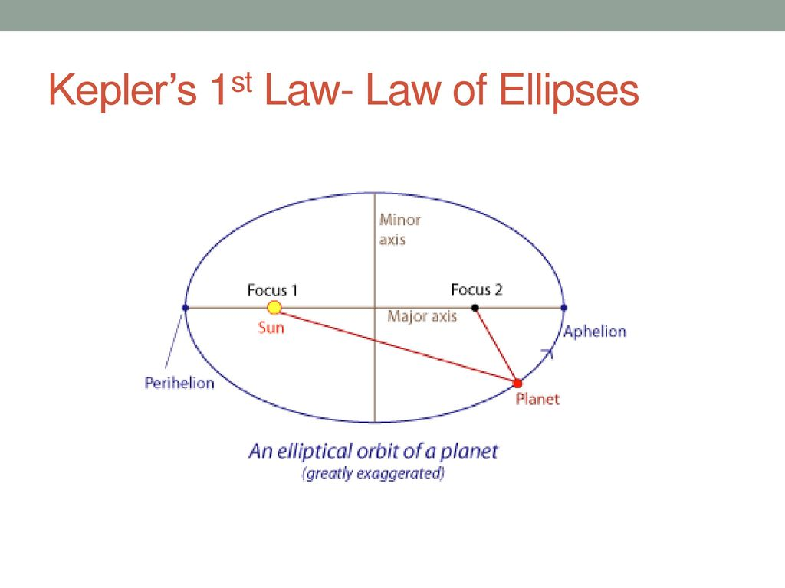
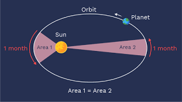
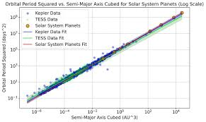

← Back to Concepts
Kepler's Laws of Planetary Motion
Kepler's Laws describe the motion of planets around the Sun and form a cornerstone of classical astronomy and physics. Developed in the early 17th century by Johannes Kepler, these laws provide a precise mathematical description of planetary orbits, challenging earlier circular orbit theories and paving the way for Newton's theory of gravitation.
Overview of Kepler's Laws
- First Law (Law of Ellipses): Planets orbit the Sun in ellipses, with the Sun at one focus.
- Second Law (Law of Equal Areas): A line segment joining a planet and the Sun sweeps out equal areas during equal intervals of time.
- Third Law (Law of Harmonies): The square of the orbital period of a planet is proportional to the cube of the semi-major axis of its orbit.
First Law: The Law of Ellipses
A planet’s path around the Sun is an ellipse, not a perfect circle. An ellipse has two foci, and the Sun lies at one of them. The elliptical nature of orbits explains the varying speed and distance of a planet from the Sun during its orbit. The orbital object is the fastest near the sun (aphelion) due to less GPE and more KE. It is the slowest away from the sun (perihelion) due to more GPE and less KE.
\( \frac{x^2}{a^2} + \frac{y^2}{b^2} = 1 \)
where \( a \) is the semi-major axis and \( b \) is the semi-minor axis.

a is half of the major axis and b is half of the minor axis
Second Law: The Law of Equal Areas
This law states that a planet sweeps out equal areas in equal intervals of time. It moves faster when closer to the Sun (perihelion) and slower when farther away (aphelion), preserving angular momentum.
\( \frac{dA}{dt} = \text{constant} \)

Third Law: The Law of Harmonies
Kepler's third law relates the square of a planet’s orbital period to the cube of its average distance from the Sun.
\( T^2 \propto a^3 \)
or more precisely:
\( \frac{T^2}{a^3} = \text{constant} \)

Data from satelites proving kepler's 3rd law
Derived from Newton's Law
Using Newton’s Law of Gravitation and centripetal motion, we can derive Kepler’s third law:
\( F_{\text{gravity}} = F_{\text{centripetal}} \Rightarrow \frac{GMm}{r^2} = \frac{mv^2}{r} \)
\( v^2 = \frac{GM}{r} \)
\( v = \frac{2\pi r}{T} \Rightarrow \left( \frac{2\pi r}{T} \right)^2 = \frac{GM}{r} \)
\( T^2 = \frac{4\pi^2}{GM} r^3 \)
Applications
- Used to predict planetary positions and satellite behavior.
- Basis for understanding orbital mechanics in spaceflight.
- Essential in exoplanet detection via orbital timing and motion.
Summary:
Kepler’s Laws capture the essence of planetary motion using elegant geometry and mathematics, laying the groundwork for Newtonian mechanics and modern astrophysics.